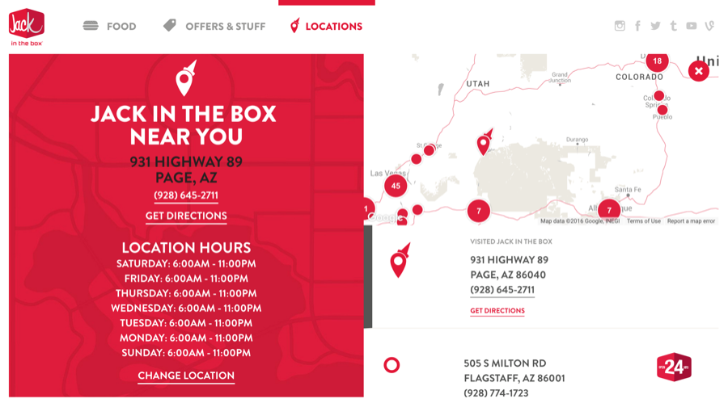
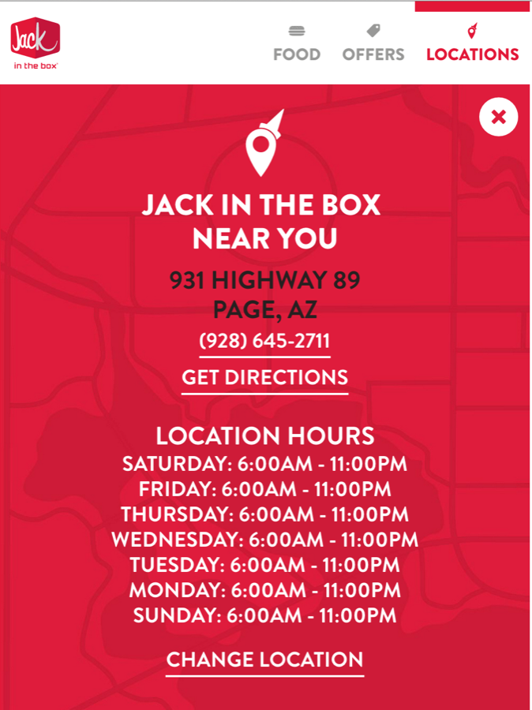
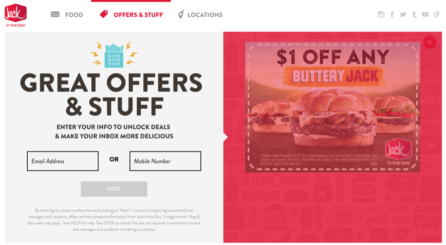

Nº 22 · Habitat III — The early internet & client work
Jack in the Box
Angular + Google Maps clustering across 3,000 nationwide locations — pan the whole country for the nearest taco.
- First observed
- 2016
- With
- Struck
Integrating Angular-JS with Google Maps at scale - with Struck and Jack in the Box.
For their national website - Jack in the Box utilizes Angular-JS on top of an Node-JS Express server.
As a contractor I helped Struck re-write part of the location page which helped customers find Jack in the Boxes in their area. The previous map did not allow customers to pan over the entire US to find the locations closest to them - I was able to implement clustering in Google Maps to seamlessly display a stylized map of Jack in the Boxes 3,000 nationwide locations. This project also moved direct-linking to locations into the browser (freeing server resources) and centralized the location data to a single resource - allowing for easy updates as locations changed.
In addition I helped Jack in the Box transition their SMS contractor to handle daily deal subscriptions.
Plates · from the field


